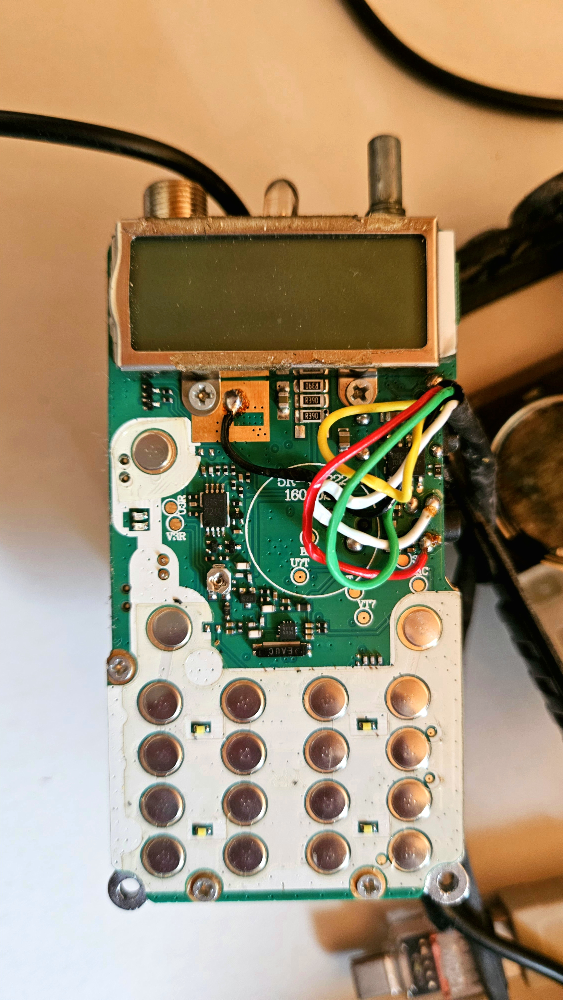
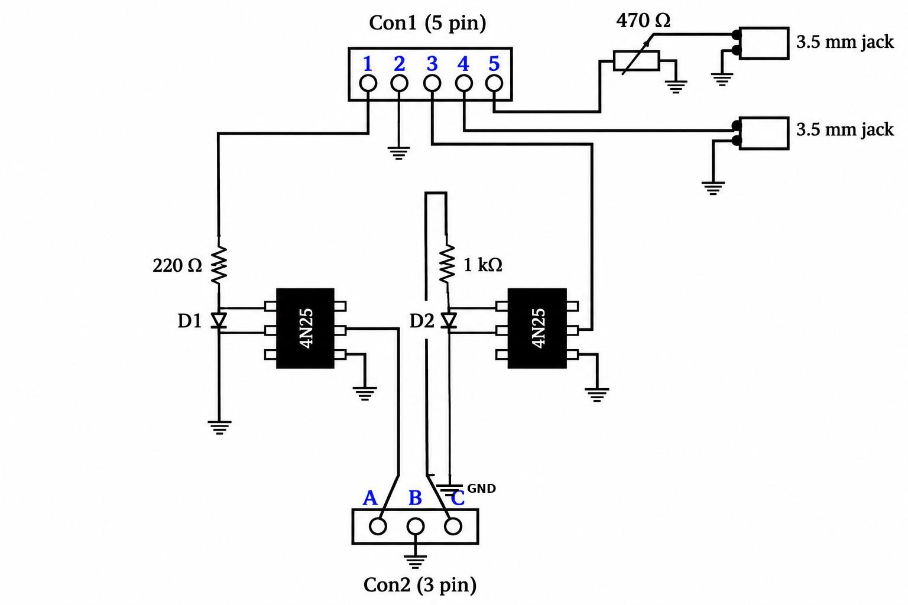
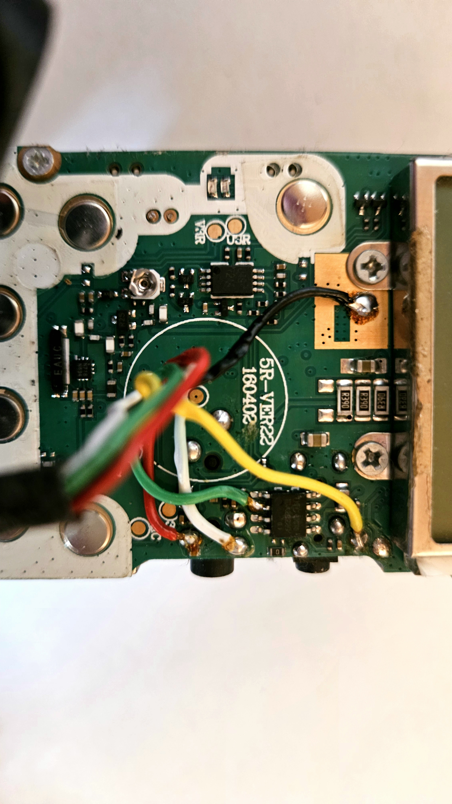

Rádióinterfész bekötése
Az alábbi dokumentáció az Orfeusz Gateway optocsatolós rádióinterfészének bekötését és alkatrészeit mutatja be.
Bekötési rajz

A rajzot EUROPA21 készítette ATI01DSZ rajza alapján.
Baofeng UV-5R – alaplapi bekötési pontok
Az alábbi fényképek a Baofeng UV-5R, 5R-ver22 / 160402 alaplap bekötési pontjait mutatják. Ennél az alaplapváltozatnál a vezetékek színei és számozása:
1 · ZöldRádió squelch
2 · FeketeGND
3 · PirosPTT
4 · FehérRádió hangszóró
5 · SárgaRádió mikrofon (MIC)

UV-5R alaplapi bekötés – 2.
Fontos! A bekötési pontok alaplapverziónként eltérhetnek. Forrasztás előtt minden esetben azonosítsd és ellenőrizd a pontokat a saját rádiódban! A rádió saját mikrofonját és hangszóróját el kell távolítani.
Rádióoldali csatlakozó – Con1 (5 pólus)
1Squelch
2GND
3PTT
4Speaker
5MIC
A számozás az eredeti, feltöltött interfészrajz szerinti kiosztást követi.
USB–UART adapter felőli csatlakozó – Con2 (3 pólus)
ACTS
BGND
CRTS
Az A/B/C jelölések az eredeti rajz szerint. Az USB–UART adapter CTS, GND és RTS kivezetéseit mindig az adott adapter dokumentációja alapján azonosítsd.
Alkatrészlista
Az alábbi lista egy rádióinterfész megépítéséhez szükséges alkatrészeket és szerelési anyagokat tartalmazza. A képek valódi termékfotók, szemléltető jellegűek; a konkrét kivitel gyártónként eltérhet.

4N25 optocsatoló
2 db · U1, U2 · DIP-6 tok
Optikai leválasztáshoz.

Ellenállások
1–1 db · R1: 220 Ω; R2: 1 kΩ
A fotó általános ellenállás-illusztráció.


Univerzális, lyukacsos NYÁK-lap
1 db
Az áramkör összeépítéséhez; méret később választható.Fotó forrása


USB–UART adapter
1 db · USB–UART adapter
A kompatibilitási listán szereplő, az adott panelen CTS, GND és RTS jeleket ténylegesen kivezető adaptert válassz. A kép csak szemléltető, nem konkrét típusajánlás.Kompatibilis adapterek listája


Vásárlás előtt ellenőrizd a kompatibilitást: az Orfeusz Gateway több USB–UART adaptert kezel. Ne kizárólag chipnév vagy általános termékleírás alapján válassz: nézd meg a kompatibilitási listát, és ellenőrizd a konkrét adapterpanelt is. A rádióinterfészhez a CTS, GND és RTS jeleknek ténylegesen elérhetőnek kell lenniük. A TX/RX/GND jeleket kivezető, de CTS/RTS nélküli egyszerű adapter nem megfelelő. A „nem igazolt” státusz nem jelent automatikusan inkompatibilitást.
Csatlakozók és hangkapcsolatok
Rádió hangszóró kimenetCon1 – 4. érintkező
3,5 mm jack csatlakozó
3,5 mm jack csatlakozó
Rádió mikrofon bemenetCon1 – 5. érintkező
3,5 mm jack csatlakozó
3,5 mm jack csatlakozó
A 470 Ω-os potméter a rajz szerinti hangszint-beállításhoz tartozik.
Fontos biztonsági megjegyzés: Összeszerelés előtt ellenőrizd a csatlakozó nézeti irányát, a rádió aljzatának tényleges lábkiosztását és az USB–UART adapter jelöléseit. A Con1 számozását ne keverd össze a dugó forrasztási oldaláról nézett kiosztással. Bekapcsolás előtt ellenőrizd a földeléseket és a rövidzármentességet. A dokumentáció a feltöltött rajzot írja le; nem helyettesíti a saját példányodon végzett elektromos ellenőrzést.